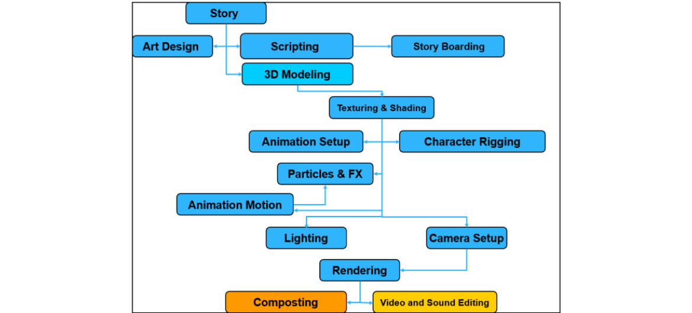

3D-анимация
Перейдем к практической части, а конкретнее к тому, как создают 3D-анимации. Препродакшн 3D-анимации в чем-то схож с 2D-анимацией. Процесс начинается с написания сценария и раскадровки, далее следуют наброски 3D-персонажей, настройка фона и подготовка к самому процессу анимации. Весь процесс создания анимации сложный и многоплановый, поэтому мы приведем лишь основные этапы.
Моделирование - этот этап мы уже успешно рассмотрели.
Постановка и анимация
Когда 3D-персонажи готовы, их помещают в соответствующие сцены и приводят в движение с помощью компьютерных программ для 3D-анимации. В видео ниже видно, что анимация на начальном этапе не налажена – движения и переходы резкие и неестественные.
Первоначальный вариант анимации так выглядит, потому что сначала аниматоры создают начальную и конечную позы любого движения. Данные позы называют ключевыми кадрами. Освещение, операторская работа (выбор угла и глубины кадра), эффекты и другие детали добавляют намного позже, когда оформляется окончательный вариант анимации, которую мы и видим на экранах.
Рендеринг
Финальный этап создания анимации – рендеринг. Процесс включает в себя доработку анимации и получение изображения. Данный этап требует пристального внимания к деталям, именно от него зависит окончательный результат.
Данным этапом и заканчивается основной процесс создания анимации, за которым следует постпродакшн, когда аниматоры добавляют спецэффекты, музыку, закадровый голос и звуковые эффекты и синхронизируют их со всей анимацией.
Технологии прогрессируют
Технологии прогрессируют: постоянно выходят новые обновления, новые программы, обновляются функции, и иногда бывает трудно не отстать. Но если вы полны решимости оставаться в курсе трендов своей сферы, вам нужно развиваться вместе с технологиями.
Компьютерные программы для создания 3D-анимации стали более совершенными, и правильные инструменты могут помочь сэкономить время, чтобы уделить его на другие проекты. Рекомендуем выбрать программу для 3D-анимации, которая соответствует вашему уровню мастерства. Зачем использовать сложные программы, если вы не сможете с ними работать?
Когда вы приобрете программу для 3D-анимации, обязательно изучите ее от а до я. Изучите программу, иконки, кнопки и функции и адаптируйте инструменты под себя.
Чем больше времени проходит, тем более наблюдательным вы становитесь. Ведь ваша конечная цель – сделать 3D-персонажей и объекты максимально реалистичными. А лучший способ подражать реальной жизни – знать, как она устроена.
Выбор программы для анимации
Компьютерных программ для создания 3D-анимации на рынке огромное количество, но именно ваш уровень владения навыками поможет сузить выбор. Если вы новичок в данном деле, выберите программу для начинающих, вы можете перейти на более продвинутый софт, когда будет готовы. Большинство программ располагают бесплатными пробными версиями, поэтому воспользуйтесь ими, прежде чем сделать окончательный выбор.
Также, чтобы выбрать нужную программу, необходимо ориентироваться на свои требования к анимации. Какие функции вы ищете? Вам нужны крутые визуальные эффекты, рендеринг в реальном времени, или может программа, специализирующаяся на моделировании человеческих персонажей, или инструмент для дизайна продукта?
Чтобы облегчить вам поиск подходящей программы, в видео ниже список лучших компьютерных программ для создания 3D-анимации:
Итог
Можно смело утверждать что 3D-анимация стала ключевым игроком в киноиндустрии, разработке игр, социальных сетях, медицине, инженерии, архитектуре, этот список можно продолжить. По мере того, как развиваются компьютерные технологии, появляется ощущение, что разрыв между трехмерной анимацией и реальной жизнью все меньше.